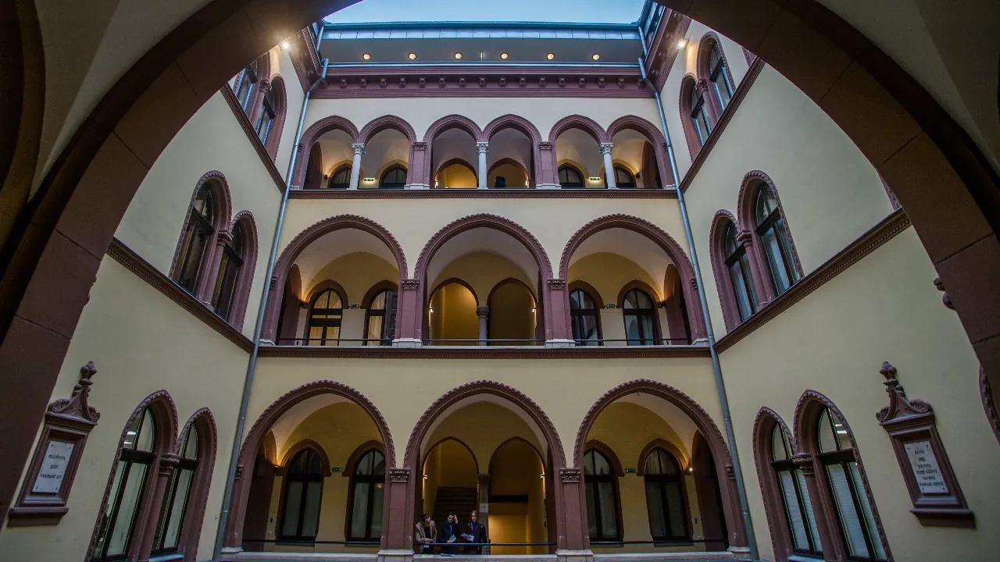
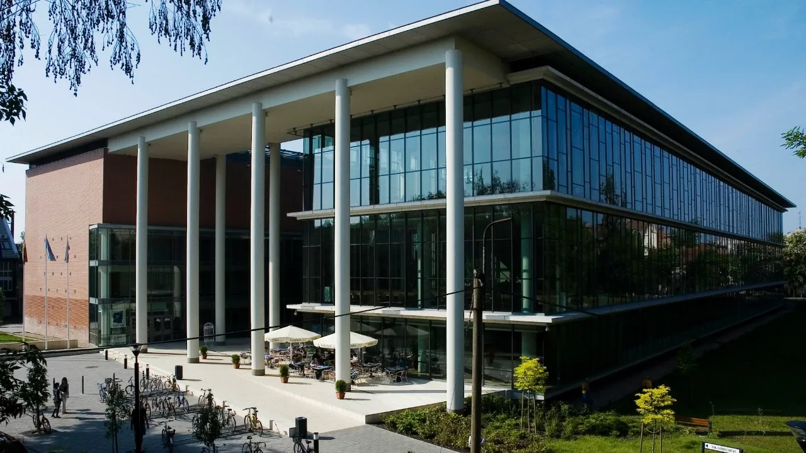
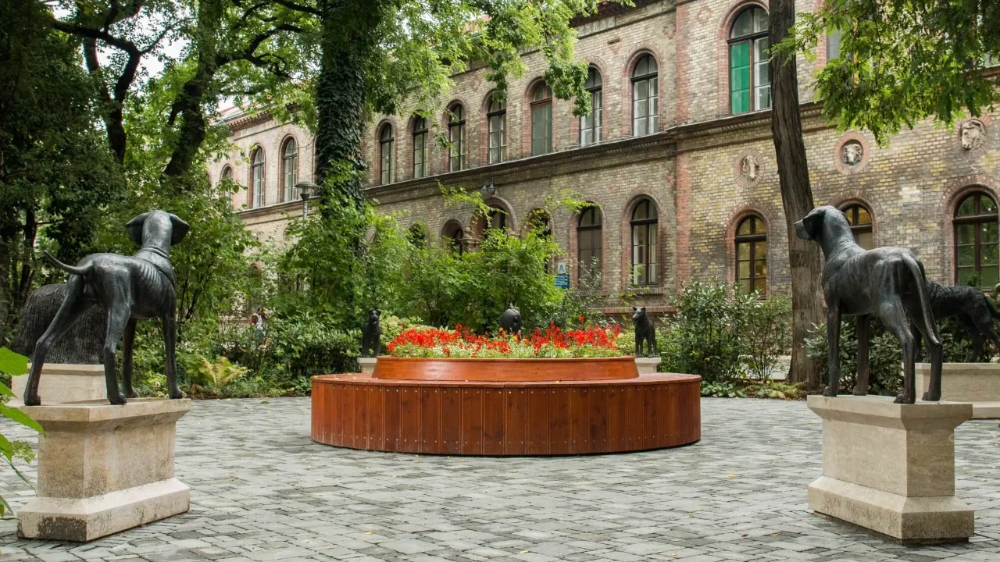
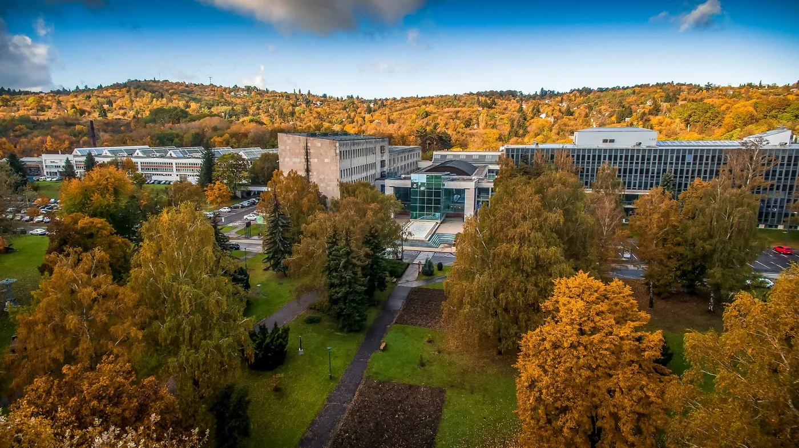
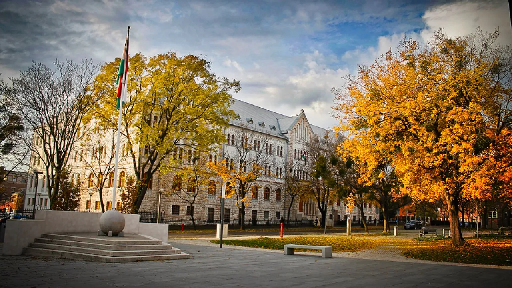
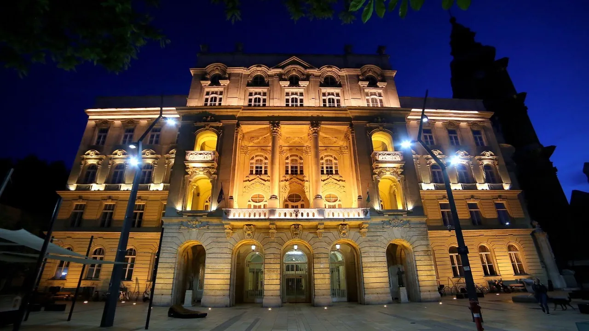
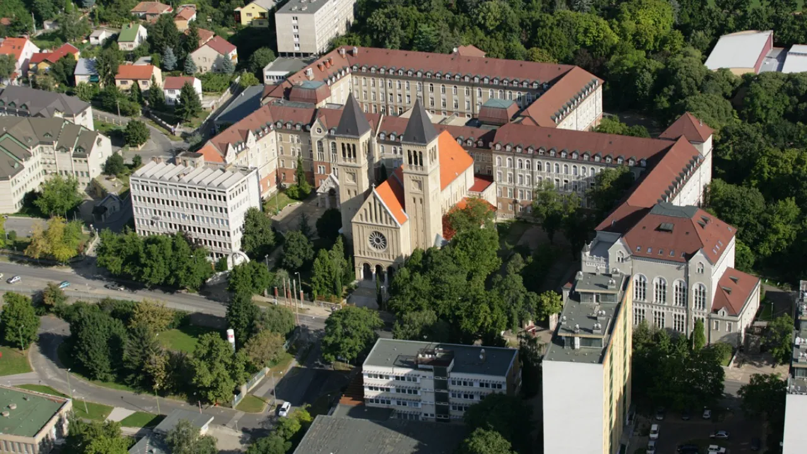

Macaristan'ın sekiz farklı şehrinde, uluslararası öğrencilere kapılarını açan 20 üniversite bulunur. Program çeşitliliği açısından Budapeşte ilk sırada yer alırken Debrecen, Szeged ve Pécs benzer akademik kaliteyi daha uygun yaşam maliyetiyle sunar. Hazırlık programlarından tıp ve pilotaja uzanan geniş bir yelpazede toplam 490 İngilizce program yer alır.
Hun Education olarak, bu üniversitelerin tamamına başvuru gönderiyoruz. Akademik geçmişinizi ve hedeflerinizi değerlendirerek profilinize en uygun kurumları belirliyor, tercih listenizi birlikte oluşturuyoruz.
Üniversite listesi








Aşağıdaki tablo şehre göre sıralandı. “Öne çıkan alanlar” sütunu, o üniversitede kataloğumuzda program bulunan başlıca alanları gösterir; kurumun tüm fakülte yapısı değildir.
| Üniversite | Şehir | Tür | Öne çıkan alanlar | Katalog |
|---|---|---|---|---|
| Budapeşte Corvinus Üniversitesi | Budapeşte | Devlet ve Vakıf | İşletme ve Ekonomi · Kültür Bilimleri ve Eğitim · Hazırlık | Programlar |
| Budapeşte Ekonomi Üniversitesi (BGE) | Budapeşte | Devlet | İşletme ve Ekonomi · Turizm · İletişim ve Medya | Programlar |
| Budapeşte Metropolitan Üniversitesi (METU) | Budapeşte | Devlet | İşletme ve Ekonomi · Hazırlık · Sanat (Müzik ve Görsel Sanatlar) | Programlar |
| Budapeşte Teknoloji ve Ekonomi Üniversitesi | Budapeşte | Devlet | Mühendislik ve Mimarlık · Bilim (Matematik, Biyoloji, Kimya) · İşletme ve Ekonomi | Programlar |
| Budapeşte Uluslararası İşletme Okulu (IBS) | Budapeşte | Özel | İşletme ve Ekonomi · Hazırlık · Beşeri ve Sosyal Bilimler | Programlar |
| Eötvös Loránd Üniversitesi (ELTE) | Budapeşte | Devlet | Beşeri ve Sosyal Bilimler · Mühendislik ve Mimarlık · Kültür Bilimleri ve Eğitim | Programlar |
| Kodolanyi Janos Üniversitesi | Budapeşte | Belirtilmemiş | İşletme ve Ekonomi · Turizm · Mühendislik ve Mimarlık | Programlar |
| Macaristan Spor Bilimleri Üniversitesi | Budapeşte | Devlet | Spor Bilimleri | Programlar |
| McDaniel College Budapest | Budapeşte | Belirtilmemiş | Tıp, Diş Hekimliği, Eczacılık · Sanat (Müzik ve Görsel Sanatlar) · İletişim ve Medya | Programlar |
| Semmelweis Üniversitesi (SOTE) | Budapeşte | Belirtilmemiş | Sağlık Bilimleri · Tıp, Diş Hekimliği, Eczacılık | Programlar |
| Veteriner Hekimliği Üniversitesi (UNIVET) | Budapeşte | Devlet | Sağlık Bilimleri | Programlar |
| Wekerle Business School (WBS) | Budapeşte | Özel | Programlar | |
| Óbuda Üniversitesi | Budapeşte | Devlet | Mühendislik ve Mimarlık · İşletme ve Ekonomi · Bilim (Matematik, Biyoloji, Kimya) | Programlar |
| Debrecen Üniversitesi | Debrecen | Devlet | Mühendislik ve Mimarlık · Bilim (Matematik, Biyoloji, Kimya) · Tarım ve Gıda Bilimleri | Programlar |
| Dunaújváros Üniversitesi (UOD) | Dunaújváros | Devlet | Mühendislik ve Mimarlık · İşletme ve Ekonomi · İletişim ve Medya | Programlar |
| John von Neumann Üniversitesi | Kecskemét | Devlet | Mühendislik ve Mimarlık · Tarım ve Gıda Bilimleri · İşletme ve Ekonomi | Programlar |
| Miskolc Üniversitesi | Miskolc | Devlet | Mühendislik ve Mimarlık · İşletme ve Ekonomi · Dil Bilimleri | Programlar |
| Nyíregyháza Üniversitesi (NYE) | Nyíregyháza | Devlet | Bilim (Matematik, Biyoloji, Kimya) · Mühendislik ve Mimarlık · Tarım ve Gıda Bilimleri | Programlar |
| Peç Üniversitesi (PTE) | Pécs | Devlet ve Vakıf | Beşeri ve Sosyal Bilimler · Sanat (Müzik ve Görsel Sanatlar) · Bilim (Matematik, Biyoloji, Kimya) | Programlar |
| Szeged Üniversitesi (SZTE) | Szeged | Devlet | Sanat (Müzik ve Görsel Sanatlar) · Beşeri ve Sosyal Bilimler · Mühendislik ve Mimarlık | Programlar |
Bu liste bir partnerlik ya da temsilcilik beyanı değildir; başvuru yapılabilen kurumları gösterir.
Şehre göre dağılım




- Budapeşte: Budapeşte Corvinus Üniversitesi, Budapeşte Ekonomi Üniversitesi (BGE), Budapeşte Metropolitan Üniversitesi (METU), Budapeşte Teknoloji ve Ekonomi Üniversitesi, Budapeşte Uluslararası İşletme Okulu (IBS), Eötvös Loránd Üniversitesi (ELTE), Kodolanyi Janos Üniversitesi, Macaristan Spor Bilimleri Üniversitesi, McDaniel College Budapest, Semmelweis Üniversitesi (SOTE), Veteriner Hekimliği Üniversitesi (UNIVET), Wekerle Business School (WBS), Óbuda Üniversitesi
- Debrecen: Debrecen Üniversitesi
- Dunaújváros: Dunaújváros Üniversitesi (UOD)
- Kecskemét: John von Neumann Üniversitesi
- Miskolc: Miskolc Üniversitesi
- Nyíregyháza: Nyíregyháza Üniversitesi (NYE)
- Pécs: Peç Üniversitesi (PTE)
- Szeged: Szeged Üniversitesi (SZTE)
Nasıl seçmeli?

Önce bölümü sabitleyin
Üniversite değil bölüm seçilir. Aynı bölüm birkaç üniversitede açılıyorsa karşılaştırma anlamlı hâle gelir.
Kabul şartını kontrol edin
Giriş sınavı, dil puanı ve portfolyo şartları kurumdan kuruma değişir.
Şehri bütçeyle birlikte düşünün
Öğrenim ücreti düşük ama kirası yüksek bir şehir toplamda daha pahalı olabilir.
Birden fazla seçenekle ilerleyin
Kontenjan kapanma riskine karşı en az iki üniversiteye başvurun.
Sık sorulan sorular
Başvurabileceğiniz üniversite; mezuniyet dereceniz, dil seviyeniz, seçtiğiniz alan ve bütçenize göre değişir. Aynı bölüm birden fazla üniversitede açılabilir ve kabul şartları farklılaşabilir. Program kataloğundan filtreleyerek başlayabilirsiniz.
Devlet üniversiteleri genellikle daha köklü ve daha geniş program yelpazesine sahiptir. Özel ve vakıf üniversiteleri ise daha küçük sınıflar, sektör bağlantılı programlar ve esnek başlangıç dönemleri sunabilir. Diploma geçerliliği açısından belirleyici olan kurumun tanınırlığıdır, statüsü değil.
Evet ve öneririz. Kontenjanlar dönem içinde kapanabildiği için birden fazla seçenekle ilerlemek riski azaltır. Her üniversitenin kendi başvuru ücreti olduğunu hesaba katın.
Kaynaklar ve doğrulama
- Liste, aracılık yaptığımız başvuruların güncel kapsamını yansıtır ve her başvuru dönemi öncesinde gözden geçirilir.
- Program, ücret ve kabul şartları üniversiteler tarafından değiştirilebilir.
- Nihai bilgi için ilgili üniversitenin resmî sayfası esastır.
Değişiklik günlüğü
- : İçerik editoryal ve SEO denetiminden geçirildi; kaynak beyanları güncellendi.
- : Sayfa yayına alındı; ücret aralıkları, başvuru takvimi ve giriş sınavı şartları güncel veriyle yazıldı.